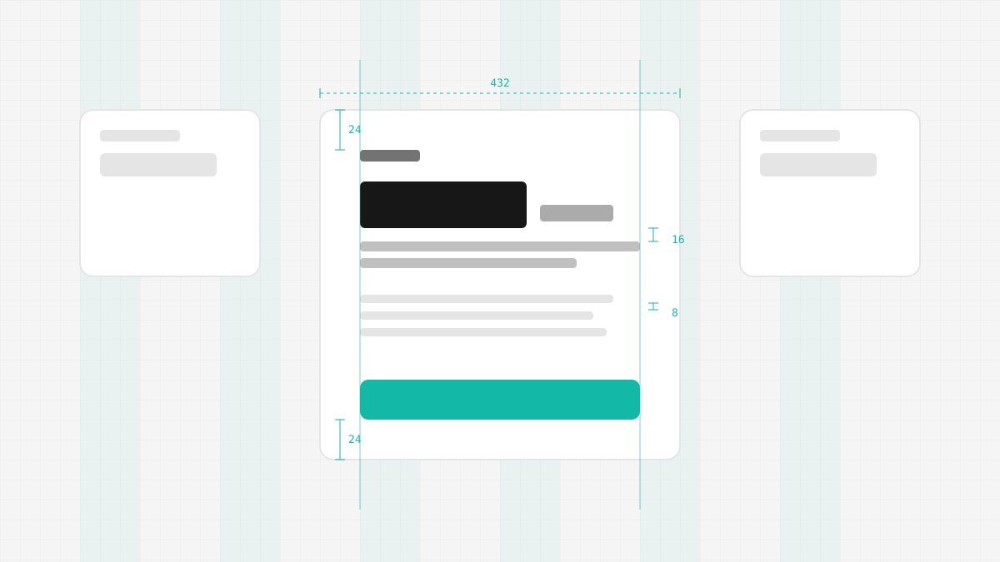
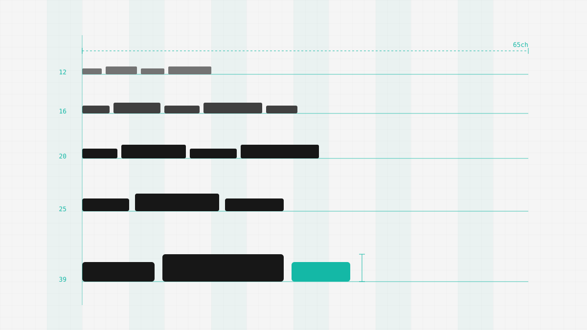
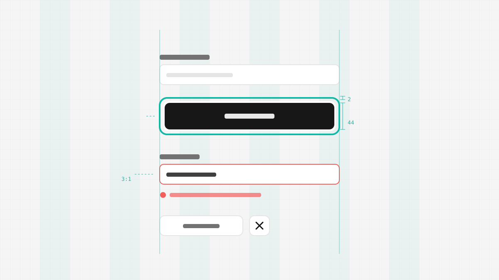
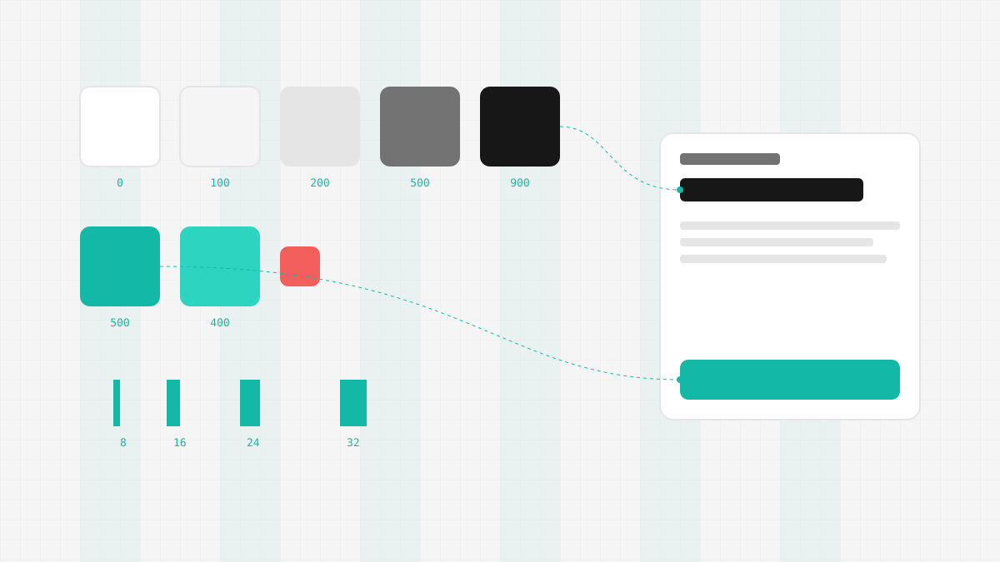

Sign-ups are up this week
Compared with last week
4,821
Sign-ups are up this week
Compared with last week
4,821
8
24
16
Compared with last week
Compared with last week
A real interface, reviewed and rebuilt step by step.
Before-and-after examples with copy-ready code.
A short quiz with an explanation for every answer.



